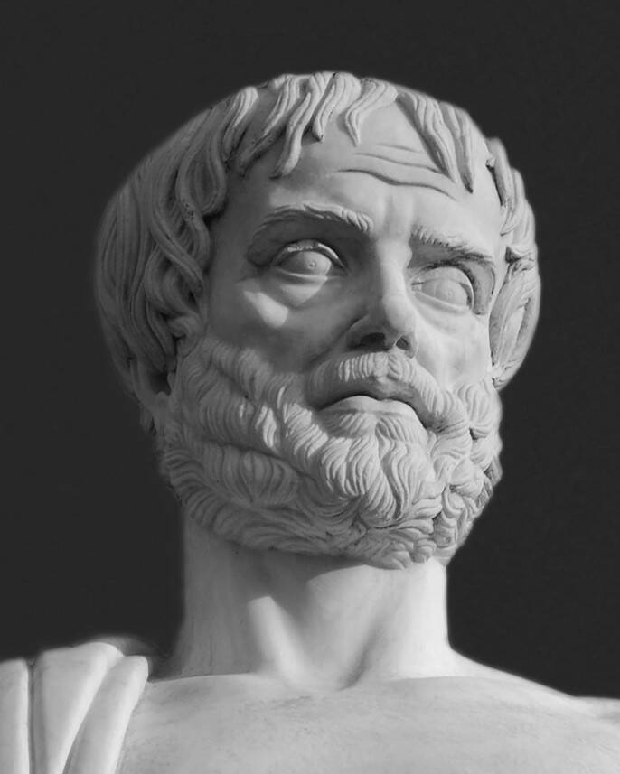
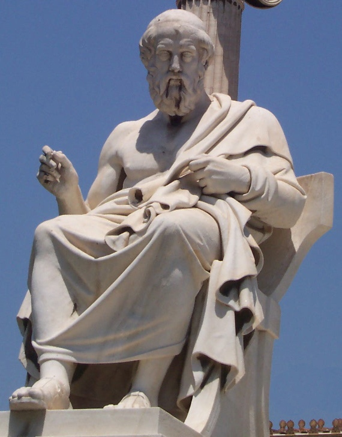
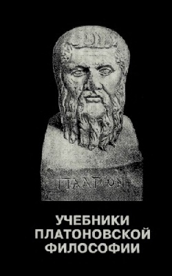
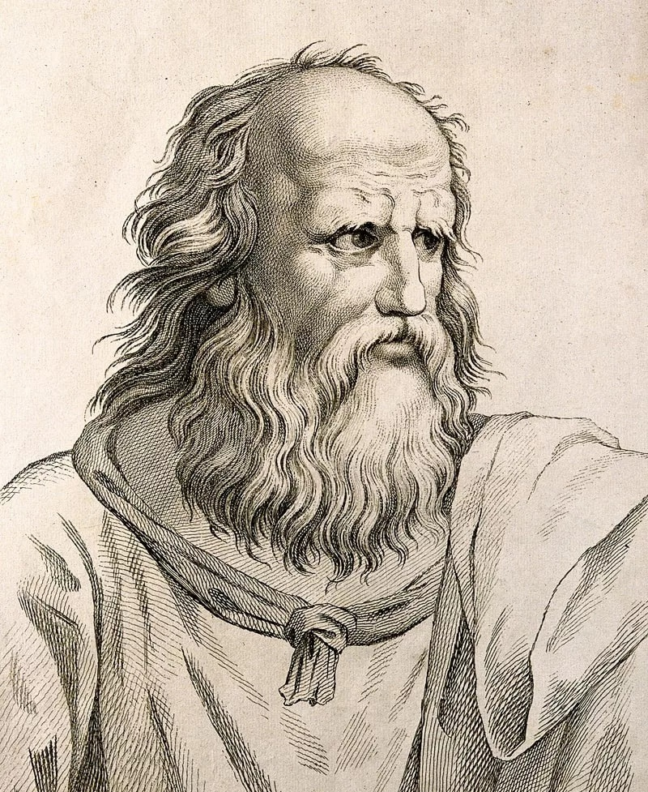
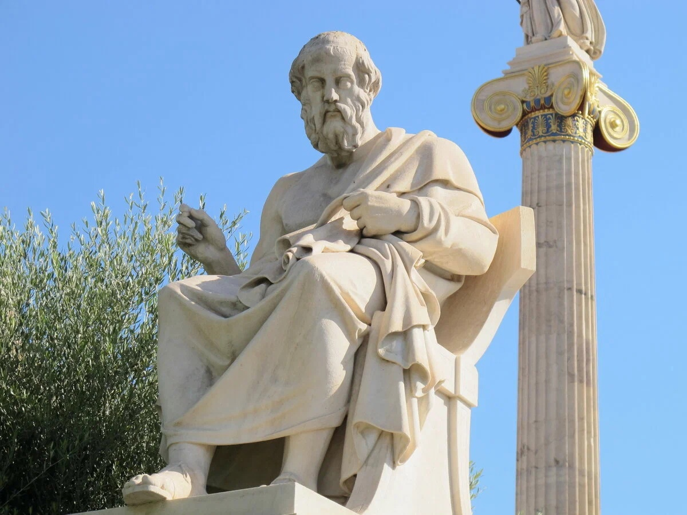

ИЗУЧЕНИЕ ФИЛОСОФИИ ПЛАТОНА В СССР
Дата публикации: 26.02.2023
Советская историко-философская наука прошла сложный и трудный путь развития.
Предварительные замечания. Если полтора-два столетия назад во всем мире издавалось много работ о Платоне, то за последние десятилетия XX в. литература о нем стала значительно большей, приобрела необозримый характер. На фоне этой обширной и все увеличивающейся литературы число работ о Платоне, появившееся у нас в СССР за период с 1917 г. и по сей день, довольно невелико.
Относительная немногочисленность публикаций о Платоне и соответственно сравнительно короткий исторический период, с которым мы имеем дело при обзоре советской историко-философской литературы о древнегреческом мыслителе, облегчает и одновременно затрудняет нашу задачу; облегчает, потому что эта литература вполне обозрима; затрудняет, потому что приходится рассматривать ее с исторически близкого расстояния. Последнее обстоятельство не всегда позволяет со всей определенностью выделить положения, выдержавшие испытание временем.
Оценка работ о Платоне предполагает их рассмотрение в контексте всей советской истории философии. Поскольку подобное не входит в нашу задачу, мы отсылаем читателя к соответствующей литературе1.
Советская историко-философская наука, которая в настоящее время достигла значительных успехов, прошла сложный и трудный путь развития. Она складывалась в условиях непрекращающейся борьбы против буржуазных и антимарксистских трактовок историко-философского процесса в целом и отдельных философских учений прошлого в частности, в перипетиях острой, подчас не лишенной драматизма борьбы против догматических, вульгарно-социологических и ревизионистских трактовок истории философии.
Советская история философии, неизменно руководствуясь марксистско-ленинским принципом партийности философии и постоянно ведя борьбу против отступлений от него, выдвигала (и выдвигает) на первый план изучение истории материализма и истории диалектики в качестве основных направлений исследовательской работы и распространения историко-философских знаний.
Еще в 20-е годы в советской историко-философской науке началась переориентация с идеалистической «линии» Платона на материалистическую «линию» Демокрита 2. Этим в значительной мере объясняется тот факт, что изучение философии Платона в СССР можно условно разделить на три периода. В первый период, приходящийся на 20-е годы, философия Платона являлась предметом исследования главным образом философов-немарксистов. Что же касается второго периода, начавшегося примерно с 30-х годов, то изучением Платона занимались как марксисты, так и исследователи, лишь недавно вставшие на позиции марксизма. Излишне говорить, что работы, относящиеся к первому периоду, не выражали точку зрения марксизма. Более того, далеко не каждая работа о Платоне, написанная впоследствии, обязательно соответствовала общей концепции советских философских и научных кругов, что будет показано в дальнейшем изложении. Поэтому было бы неправомерно переносить недостатки и просчеты, допущенные тем или иным исследователем Платона, на советскую историю античной философии в целом. Наконец, к третьему периоду относятся труды, написанные за последние три-четыре десятилетия.
Отмежевание от идеалистической «линии» Платона и его утопии. Давно замечено, что постоянный интерес к античности, наблюдаемый в новоевропейской истории, в революционные эпохи не угасал, а, скорее, даже усиливался. И Россия в этом отношении не была исключением. В первые годы Советской власти в научных кругах, занимавшихся изучением истории античной общественной и философской мысли, приобрели особую актуальность проблемы так называемого античного социализма и коммунизма й в первую очередь вопрос об утопии Платона и о положении сословий в его «идеальном» государстве.Оговоримся, однако, что этот интерес был обусловлен также и коренными изменениями, происшедшими во второй половине XIX в. в самой мировой науке о классической древности. На смену господствовавшей до середины прошлого века восторженно-эстетической оценке эллинов как «образца» человечества, а Эллады - как родины гражданских идеалов и недосягаемых художественных творений, пришел более трезвый и прозаический подход, сделавший основным объектом изучения не деяния легендарных героев и выдающихся исторических личностей, а явления экономической и социально-политической жизни древнего мира. Главными сторонниками подобного подхода стали немецкие историки Ю. Белох, Э. Мейер и Р. Пельман. Если раньше Эллада, ее идеалы и герои коренным образом противопоставлялись охваченному страстью к наживе веку, то теперь, напротив, античность и современность не менее решительно приравнивались, уподоблялись и отождествлялись; на классическую древность стали переносить такие чуждые ей понятия и представления, как «капитал», «рабочее движение», «социал-демократия», «социализм», «коммунизм» и т. п., взятые из современной капиталистической действительности. Тем самым история античного мира извращалась и модернизировалась (наиболее откровенным модернизатором такого рода явился Р. Пельман, автор работы об античном коммунизме и социализме 3).
Однако возросший интерес к экономической и социально-политической жизни древнего мира сказался и в повышенном внимании к учению Платона об утопии, в частности к вопросу о положении третьего сословия в его идеальном государстве. Обсуждение этого вопроса, начатое Ε. Н. Трубецким 4 и П. И. Новгородцевым 5 в первые годы Советской власти, было продолжено в работах А. А. Рождественского 6, В. П. Перцева7 и К. Новицкого (К. Перовина) 8.
В своей работе «Положение третьего сословия в «Государстве Платона» А. Рождественский выделял две противоположные точки зрения, идущие, с одной стороны, от Э. Целлера, а с другой - от Р. Пельмана. По мнению Целлера, Платон «оставляет для массы народа обыкновенный образ жизни и, по-видимому... хочет предоставить ее самой себе и во всем остальном» (с. 1), т. е. он равнодушен к судьбе третьего сословия. Р. Пельман, возражая Э. Целлеру, говорил, что «вся политическая система Платона была бы абсурдом, если бы он действительно разделял это мнение» (там же), так как в таком случае платоновское государство было бы неустойчивым в результате борьбы сословий. Принимая точку зрения Пельмана, А. Рождественский считал ссылку на «Государство» Платона (421 а), где говорится, что для прочности государства гораздо важнее качества правителей и законодателей, чем свойства управляемого народа, несостоятельной, ибо, как утверждал тот же Платон, «ни один класс граждан не должен пользоваться счастьем за счет другого класса» (с 1-2) 9.
Нельзя, конечно, сказать, что, задавшись целью обеспечить прочность идеального государства, Платон был безразличен к судьбе третьего сословия. Он считал, что «при росте и благоустройстве нашего государства надо предоставить всем сословиям возможность иметь свою долю в общем процветании, соответственно их природным дарованиям» (Государство, IV 421 с). Однако то, что у Пельмана и Рождественского называется «благом всех граждан», в действительности (т. е. в государстве Платона) означало разделение сословий по профессиям и добросовестное выполнение каждым гражданином отведенной ему роли в обществе: «Мы установили, что каждый отдельный человек должен заниматься чем-нибудь одним из того, что нужно в государстве, и притом как раз тем, к чему он по своим природным задаткам больше всего способен... Это и есть справедливость» (Там же, 433 а).
Нетрудно заметить, что справедливость, о которой говорил Платон, ограничивала социальную роль и значимость третьего сословия исключительно деятельностью в сфере материального производства; она отстраняла широкие слои народа не только от управления государством, но и от всей общественно-политической жизни полиса. Упуская из виду антидемократическое (консервативно-аристократическое) понимание Платоном социальной справедливости, А. Рождественский пришел к выводу, что платоновское государство представляет собой единую, сплоченную и нерушимую семью, в которой все граждане так или иначе равны (в силу отсутствия частной собственности) и которая основана (пусть на утопической) теории социализма и коммунизма.
Аналогичных взглядов придерживался В. П. Перцев в своей книге «Социально-политическое мировоззрение Платона», изображая Платона умозрительным мыслителем, руководствовавшимся идеальными побуждениями и мечтавшим об установлении «общего коммунизма», об осуществлении экономического равенства всех, о реализации «экономического демократизма» (Указ. соч., с. 71 - 72).
По мнению автора, идеалом Платона было «аграрное государство без общественных контрастов и экономических противоречий, с всеобщим согласием в мыслях и чувствах»; этот идеал настолько расходился с «господствующими тенденциями его века - классовой враждой, разгулом индивидуалистических тенденций и полной неспособностью тогдашнего общества к какой-либо коллективной солидарности,- что установить новые порядки можно было только мерами крайнего принуждения и властного вторжения во все сферы общественной и частной жизни» (с. 172). По словам автора, у Платона «полицейские приемы управления», как и принудительное водворение «экономического демократизма», также диктовались полным расхождением между идеалом и действительностью, и, в частности, великому философу «не хватало жизненного смысла и практического чутья действительности» (там же).
К. П. Новицкий (К. Петровин) в своей небольшой книге «Платон» (М., 1928) выступил против наметившейся тенденции к произвольному сближению утопии Платона с научным коммунизмом, подчеркивая, что «коммунизм Платона - коммунизм потребления господствующего класса» (с. 23). Вместе с тем К. П. Новицкий видел в Платоне «родоначальника утопического коммунизма» (с. 27), оказавшего значительное влияние на утопистов нового времени.
Действительно, в теории социальной утопии Платон (независимо от поставленной им цели) впервые выразил идею о частной собственности как источнике раскола общества («государство богатых» и «государство бедных», по словам Платона) и связанных с ним социальных конфликтов. Не удивительно поэтому, что эта идея древнегреческого философа пережила период античности и сыграла большую роль в истории развития общественно-политической мысли последующих времен, особенно нового времени.
Трудно переоценить идею Платона об общественной сущности человека10, впоследствии сформулированную его учеником Аристотелем в тезисе, согласно которому человек есть φύσει 3ψον πολιτικών. Положения Платона о государстве и обществе и их значение в качестве организующих и цементирующих начал человеческой жизни, о роли государства как орудия политической власти и другие также являются большой заслугой древнего философа, не говоря уже о разработке им вопроса социальной справедливости и роли сознания и воспитания в жизни общества и государства. Поэтому нам представляется односторонней точка зрения С. Я. Лурье, высказанная им в книге «История античной общественной мысли» (М., 1929), согласно которой общественно-политические взгляды афинского мыслителя крайне реакционны (с. 306-310, 334- 338)
В связи с решением вопроса о методологии подхода и толкования мировоззрения Платона П. С. Попов в статье «Об изучении философии Платона» 12 рассматривает учение греческого философа об идеальном государственном устройстве. Касаясь спора историков философии по центральному пункту философии Платона13 автор подвергает критике бытовавшее в историко-философской литературе представление о том, что система объективного идеализма Платона возникла на основе идеалистических, умозрительных изысканий (с. 171) и что государство Платона явилось будто бы попыткой воплощения в жизнь мира идеального, мечтательной теории идей (с. 173). Ссылаясь на исследование В. Иегера «Пайдея», в частности на положение о том, что «Государство» и «Законы» составляют подлинное ядро философии Платона, П. С, Попов утверждает, что система идей Платона отражает его учение о государстве (с. 172); Платон, по его мнению, не мечтатель, не витающий в эмпириях доктринер, а «реальный политик; общественно-политическая практика служила ему исходной базой, а его идеология, его царство идей есть нечто производное» (с. 173) 14.
Не вызывает сомнения, что в качестве исходной методологической установки при исследовании философских учений должно быть выявление конкретно-исторических условий той или иной эпохи и общественно-политической практики классов и государств. Однако это верное само по себе положение в свое время было односторонне понято некоторыми советскими исследователями и истолковано в том смысле, что любые идеи и теории являются простой реакцией (рефлексом) на исторические условия, простой проекцией или непосредственным отображением классовых интересов в сфере понятий и представлений. Установка на прямолинейное выведение идей из экономического базиса и классовых интересов была распространена и на математические воззрения Платона, в частности на его отношение к точным наукам.
Отношение Платона к точным наукам. Не говоря о философии, многогранное творчество Платона распространяется не только на область античной политической, правовой, этической, эстетической, психологической, педагогической и экономической мысли, но также и на историю античной литературы и историю точных наук в античном мире. Хотя с именем Платона не связаны какие-либо открытия в области точных наук, однако за ним нередко признавались (и признаются) значительные заслуги в истории античной математики, в частности определение основных математических понятий, установление новых методов в геометрии (например, метода доказательств от противного) и т. п.
Одной из первых работ, посвященных этой теме, была статья М. Выгодского «Платон как математик» 15. К сожалению, отвергая за древним мыслителем какие бы то ни было заслуги в истории математики, М. Выгодский не сумел по достоинству оценить учение Платона о числах и величинах и пришел к выводу о всецело «реакционной» роли Платона в математике и «развитии точных наук вообще» (с. 195). По словам автора, в сочинениях Платона мы имеем дело не с математикой как таковой, а с «математической мистикой», граничащей порой с «математической мистификацией» (с. 199).
Для подтверждения выдвинутых положений М. Выгодский обращается к диалогу «Тимей», в котором изложена натурфилософия, учение о происхождении и устройстве вселенной Платона. Утверждая, что Платон все выводит «из творческих актов разумно действующего существа» (с. 199), автор полагает, что четыре стихии (огонь, воздух, вода и земля), из которых платоновский бог творит мир, были заимствованы философом у Эмпедокла. «Но,- продолжает М. Выгодский,- голая апелляция к божеству была бы еще недостаточна для настроенного весьма рационалистически торговца, владельца мануфактурной мастерской, архитектора, механика и т. д. И вот Платон «научно» подкрепляет свои метафизические построения, апеллируя притом к самой точной науке - математике...» (с. 201). Справедливо указывая на заимствование Платоном атомистической теории Демокрита, М. Выгодский пишет, что Платон попытался объяснить превращение элементов (огня, воды и воздуха) друг в друга «по «химическим» формулам вроде такой: 1 вода=1 огонь+2 воздух, или придавая каждому элементу число, соответствующее числу его граней: 20=4+(2-8)» (с. 203).
Если учесть, что в доплатоновской натурфилософии превращение элементов изображается либо как упорядоченный процесс перехода противоположностей (холодного и теплого, сухого и влажного) друг в друга (Анаксимандр, Гераклит), либо как процесс разрежения и сгущения первоначала-воздуха (Анаксимен), либо же как процесс, где первоначало-огонь, «мерами» возгарающий и «мерами» угасающий, то стремление Платона объяснить становление и разложение элементов, их взаимопревращение по «химическим» формулам и с помощью математических (числовых) отношений представляет собой шаг вперед и заслуживает одобрения. Однако, по мнению М. Выгодского, «такая поверхностная теория строения вещества (т. е. теория вещества, основанная на представлении об элементах, как состоящих из плоскостей треугольников и многогранников.- Ф. К.) является поистине поверхностной для столь глубокомысленной философии... Платон видел в математике не орудие исследования внешнего мира, а лишь средство для квази-научного обоснования своего по существу религиозного мировоззрения» (с. 204).
Между тем «поверхностная», с точки зрения М. Выгодского, теория строения вещества Платона вполне глубокомысленна. Даже столь критически настроенный к Платону исследователь, как Э. Франк, в работе «Платон и так называемые пифагорейцы» 16 показал, что платоновская теория геометрического строения элементов есть не что иное, как разновидность атомизма Демокрита и представляет собой один из (математических) способов познания мира 17.
На тесную связь платоновской теории строения вещества с атомизмом Демокрита обратил внимание также и Г. Баммель в статье «Демокрит и Платон» 18, написанной по поводу книги Э. Франка. Г. Баммель вслед за Э. Франком трактует атомизм Демокрита как количественный (математический) ; основное положение атомизма, по его мнению, заключалось в «количественном строении материи всего мироздания» (с. 475). Иными словами, в атомизме «действительно или истинно существующим было лишь то, что выражалось числовыми отношениями; вещь лишалась всех своих воспринимаемых нами в ощущениях качеств, оставалась одна лишь математическая форма -- фигура, положение и место; определить данный предмет для атомизма означало то же самое, что указать его фигуру, положение и место; определением предмета было число, анализ его числового выражения, его формы, идеи» (там же).
В центральной части статьи Г. Баммель писал: «Вот этот количественно логический характер атомизма был заимствован Платоном у Демокрита даже вместе с его терминологией-«идея», «элемент», «логос», (понятие), «Синтез» (συμπλοκή) и «диайрезис» (разделение) . Также и для него чистая форма эмпирического, «идея», была единственным подлинным предметом научного познания, также и для него эта «идея» не заключала в себе ничего качественного; это было число, но для него это число уже не было числом атомов и вообще числом чего-либо, но было просто числом, «идеальным» числом, не имеющим отношения ни к чему другому. Тело для него есть «ничто», пустое пространство, оно существует только постольку, поскольку пространство наполняется по образцу трансцендентных «чисел» или «идей» - геометрическими формами. Поэтому идеи Платона также являются числами, как у Демокрита, но в отличие от его атомов-идей эти числа различаются качественно, как друг с другом «не сравнимые», «идеальные числа», существующие в вечности еще до происхождения нашего мира. Поэтому и получилось так, что мельчайшие неделимые частицы, из которых также и по Платону образуются тела, представляют собой не твердые материальные тельца, как у Демокрита, но бестелесные математически-идеальные точки, или, поскольку точка есть начало линии, атомные линии» (с. 475).
Оставляя в стороне некоторые неясности в рассуждениях Г. Баммеля (мы имеем в виду положение о том, что идеи-числа Платона не заключают в себе «ничего качественного» и в то же время «различаются качественно»), отметим, что геометрическая теория строения элементов Платона и вопрос об отношении этой теории к атомистике Демокрита и по настоящее время привлекает внимание исследователей. Одним из дискутируемых был и остается вопрос о природе геометрических фигур, идей-чисел Платона. Не вдаваясь в его детали, укажем лишь, что А. Ф. Лосев в своей книге «Античный космос и современная наука» (М., 1927) в противоположность Г. Баммелю, не рассматривая геометрические фигуры Платона и его идеи-числа в качестве неких чисто идеальных сущностей, отстаивал положение, согласно которому платоновские геометрические фигуры (треугольники) «говорят не о некоей идеально-геометрической поверхности, но суть формулы определенным образом организованного пространства со всеми его тремя измерениями» (с. 18). Другими словами, геометрические формы Платона, по мнению А. Ф. Лосева, обладают некоторыми физическими свойствами и представляют собой дискретные объемные величины.
В настоящее время аналогичного взгляда придерживается М. Д. Ахундов. Констатируя своеобразное преломление математического атомизма Платона в современной физике (в связи с тезисом В. Гейзенберга о том, что в квантовой физике налицо «поворот от Демокрита к Платону» 19, т. е. от атомов первого к математическим формам последнего), М. Д. Ахундов считает, что противопоставление в данном случае Платона Демокриту некорректно, поскольку математические фигуры и математические пропорции, которые Платон кладет в основу элементов с целью их количественного, рационального познания,- «это, вообще говоря, не столько отличие, сколько дальнейшее развитие рациональных идей математического атомизма Демокрита, амеры которого были призваны для измерения длин в атомном мире»20.
Платон - объективный идеалист, тяготеющий к религиозному мировоззрению. Однако его нельзя назвать спиритуалистом, верящим в чисто духовного, абсолютно свободного и личностного бога христианства, творящего мир из чистого слова-логоса. Платон, без сомнения, язычник, воспринимающий мир как космос - божественный порядок, организованный высшим разумом прекрасный строй вещей. И регулятивной идеей его мировоззрения в целом является идея о наличии в мире и в самой человеческой жизни порядка и гармонии: «Но достоинство каждой вещи, буть то утварь, тело, душа или любое другое существо, возникает во всей своей красе не случайно, но через слаженность, через правила того искусства, которое ей присуще... Значит, это какой-то порядок, присущий каждой вещи и для каждой вещи особый, делает каждую вещь хорошей» (Горгий, 506 d-с).
Принцип порядка, согласно Платону, пронизывает все области бытия: «Мудрецы учат... что небо и землю, богов и людей объединяют общение, дружба, порядочность, воздержанность, справедливость, по этой причине они и зовут нашу Вселенную «порядком» («космосом»), а не «беспорядком», друг мой, и не «бесчинством». ...Ты не замечаешь, как много значит и меж богов, и меж людей равенство,- я имею в виду геометрическое равенство,- и думаешь, будто надо стремиться к превосходству над остальными. Это оттого, что ты пренебрегаешь геометрией» (там же, 508 а). Из приведенного следует, в частности, что принцип всеобщего порядка более всего и очевиднее всего проявляется в геометрии, «геометрическом равенстве». Геометрическое равенство как «самое истинное и наилучшее равенство» есть «суждение Зевса» (Законы, 757 а). Вместе с тем, согласно Платону, геометрическое равенство, будучи проявлением всеобщего порядка, является выражением подлинной справедливости.
Вполне понятно, что подобное отождествление таких совершенно разнородных феноменов, как «всеобщий порядок», «геометрическое равенство» и «справедливость», для аналитического мышления современного человека представляется произвольной игрой воображения, свободным полетом фантазии и даже продуктом мистики. Однако если попытаться понять Платона исходя из него самого, т. е. не судить о нем по аналогии с современным стилем мышления, то легко обнаружится свойственный Платону, как и большинству греческих философов, синтетический взгляд на мир как единое целое и вместе с тем художественно-эстетическое восприятие мира как стройного и соразмерного порядка (т. е. как космоса), что и привело необычайно развитое художественное воображение Платона к приравниванию разнородных явлений и проведению между ними аналогии21.
Итак, геометрическое равенство, по мнению Платона, есть справедливость. Это обстоятельство позволило уже упомянутому советскому исследователю С. Я. Лурье поставить вопрос об отношении математики (геометрии) Платона к его политическим воззрениям. В статье «Платон и Аристотель о точных науках» 22 С. Я. Лурье выдвинул тезис, согласно которому «пропаганда» Платоном геометрии, не преследуя каких-либо познавательных целей, была полностью направлена на порабощение народа, на защиту интересов аристократии своего времени, и потому платоновское выражение «бог всегда геометризирует» означает только: «Бог - враг демократического поравнения!» (с. 309). Поскольку положение о том, что Платон использовал математику исключительно в социально-политических целях, имеет место и поныне23, рассмотрим его несколько подробнее.
С.Я. Лурье указывает в первую очередь на то, что «в греческих демократических государствах все громче раздавалось требование всеобщего поравнения вплоть до «передела земли» (γης αναδασμός) и «отмены долгов» (χρεών αποκοπή^ Для античной интеллигенции прежняя ее база - земледельческая аристократия - стала уже слишком узкой; ей стало необходимо опираться и на зажиточный городской класс. А для этого не годилось полное отрицание каких бы то ни было прав за простонародьем; необходимо было признавать и за ним какие-то крохи политических прав. И вот в противовес демократическому учению о «численном равенстве» (ίσότης αριθμητική), к которому эта интеллигенция относилась пренебрежительно, выдвигается теория «равенства по достоинству» (ισότης κατ' 'α ffj ^α^)·
Далее С. Я. Лурье ссылается на античных авторов (Ксенофонта, Исократа) и Платона, который замечает, что «демократия... уделяет некое равенство в равной мере и равным неравным» (Государство, 558 с), а говоря о двух (арифметическом и геометрическом) видах равенства (Законы, 757 в), рассматривает одно из них как «равенство мер, веса и числа», а другое - как «самое истинное и наилучшее равенство, ибо оно есть суждение Зевса... Он уделяет большему - большее, меньшему - меньшее, каждому давая соразмерно его природе».
С. Я. Лурье ссылается также на Аристотеля, утверждающего, что «демократическая справедливость состоит в том, чтобы иметь поровну по числу, а не по достоинству» (Политика VI 2, 1317 в 4). Говоря, что рассуждения Платона об арифметических и геометрических равенствах или об арифметических и геометрических пропорциях «впоследствии перепевались и Аристотелем» (с. 309), С. Я. Лурье приводит еще один довольно любопытный отрывок из аристотелевской «Политики» (V 1 1301 а 26 и сл.): «Народу свойственно из того, что (все граждане) равны в каком-либо отношении, делать вывод, что они равны и абсолютно (απλώς); так как в равной степени свободны, то они считают, что они и абсолютно равны. Олигархия же из того, что (граждане) не равны в каком-либо отношении, заключает, что они абсолютно (απλώς) не равны... Поэтому первые как равные считают справедливым от всего получать равную часть, а вторые как неравные стараются получить больше, чем следует... Ведь бывает двоякое равное: по числу (αριθμώ) и по достоинству» (κατ'άξίαν).
Итак, заключает С. Я. Лурье в своей книге «Очерки по истории античной науки» (М.- Л., 1947), «культ геометрии у идеалистических философов IV в. объяснялся в первую голову вовсе не любовью к чистой отвлеченной науке: геометрия чтилась потому, что она давала чисто лаучный и, как тогда казалось, решающий аргумент в политическом споре о лучшей форме правления» (с. 310). В этой связи становится понятным и стремление С. Я. Лурье показать, что «Платон и Аристотель только по недоразумению попали в число творческих деятелей античного естествознания» (с. 6).
Оставим Аристотеля и обратимся к вопросу о том, в чем Платон видел главную ценность математики и математических занятий24. Знание вообще, познание идеи добра в особенности, говорил он, приобретается «долгим путем», а не дается, так сказать, разом, каким-то одним прыжком, каким-то мистическим озарением (Государство, VI 504 в -505 а). Платон полагал, что наука о числах побуждает к «созерцанию бытия» (525 а - е), т. е. способствует философским изысканиям. «Долгий путь», о котором говорил древний мыслитель, представляет ряд этапов, последовательное прохождение которых является условием познания идеи блага. Этапы эти - искусство счета (арифметика) , геометрия, в том числе стереометрия, астрономия, музыка и диалектика (т. е. высшая наука, универсальный метод рационального постижения истинного бытия - идеи блага). Так обстоит дело с определением места и значения математики и геометрии в системе идеалистического учения Платона.
Несомненно, Платон и Аристотель переносили математические представления о пропорциях на общественно-политическую жизнь и говорили о равенстве арифметическом и геометрическом как о разных видах справедливости и соответственно разных формах государственного правления. Ф. Д. Гарвей в работе «Два вида равенства»25 показал, что из открытых пифагорейцем Архитом трех видов пропорции - арифметической, геометрической и гармонической26 - в эпоху греческой классики первые две пропорции применялись в политике, в частности в дебатах о лучшем политическом строе.
Ф. Д. Гарвей, подробно разбирая употребление термина ίσότης (равенство) от пифагорейцев до поздней античности, приходит к выводу, что идея «арифметического равенства» не была присуща демократам - ее им приписали антидемократы (с. 127), И действительно, афинская демократия, основываясь на равенстве граждан перед законом, никогда не признавала абсолютного равенства граждан по достоинству (κατ'άξίαν): важнейшие государственные должности (например, должность стратега) не избирались жребием. Так, Перикл, признанный вождь афинской демократии, в надгробной речи, переданной Фукидидом (II 37, 1) говорил: «По отношению к частным интересам законы наши предоставляют равноправие для всех; что же касается политического значения (αξίωσιν), то у нас в государственной жизни каждый им пользуется предпочтительно перед другим не в силу того, что его поддерживает та или иная политическая партия, но в зависимости от его доблести (αρετή,-), стяжающей ему добрую славу в том или другом деле».
Если, таким образом, античная демократия в «золотой век Перикла» в наиболее существенных пунктах основывалась на принципе «геометрического равенства», то возникает вопрос, что же з таком случае давало основание Платону и Аристотелю считать «арифметическое равенство» (арифметическую пропорцию) парадигмой демократии? Что именно имели в виду Платон и Аристотель, когда первый в уже цитированном нами отрывке из «Горгия» (508 а) призывает Калликла не стремиться к «превосходству над остальными» и, стало быть, не пренебрегать «геометрией», а второй в «Политике» (V 1, 1301 а - в), отстаивая «геометрическое равенство», критикует не только демократов как сторонников «арифметического равенства», но и олигархов, которые решительно не признают вообще никакого (и ни в каких отношениях) равенства между гражданами 27.
Судя по всему, Платон и Аристотель, критикуя демократию за ее тяготение к «арифметическому равенству», имели в виду не умеренную демократию Перикла, которая, по словам Фукидида, была по имени демократией, а на деле - правлением первого гражданина, а ту малопривлекательную демократию, которая сложилась в ходе Пелопоннесской войны и в последующем становилась все более уравнительной и все более тяготела к требованию всеобщего «поравнения». Бесспорно, что Платон и Аристотель как враги тирании были вместе с тем и противниками всеобщего, пусть демократического, «поравнения». Поэтому в известном смысле можно согласиться с С. Я. Лурье, который пишет в своей книге «Платон и Аристотель о точных науках»28, что знаменитое выражение Платона «ты пренебрегаешь геометрией» означало, что «ты чужд... умеренно-аристократической точки зрения на государственное устройство» (с. 308).
Философия Платона. Платон - родоначальник объективного идеализма, одного из основных направлений в истории философской мысли с античных времен и до наших дней. Идеализм Платона, являющийся предметом изучения и разных толкований вот уже свыше 2000 лет, рассматривался многими советскими историками философии. Исследование в советской истории философии исторического процесса в целом с точки зрения борьбы «линий» Демокрита и Платона имело положительный смысл и сыграло большую роль в развитии советской историко-философской науки. Диалектический метод идеалистической философии Платона создавал дополнительные условия для различения объективного идеализма Платона от диалектического материализма, марксистско-ленинской диалектики.
Однако эта установка на противопоставление двух «линий» в истории философии, принимавшая подчас излишне прямолинейный характер, приводила в отдельных случаях к схематизации истории философии и обеднению ее содержания. Это в первую очередь относится к Платону, все учение которого подчас сводилось к теории идей, без учета того, что творчество великого философа не исчерпывается идеалистическим решением основного вопроса философии.
«Очерки по истории философии» (т. 1. М.-Л., 1929) В. Сережникова принадлежали к числу первых работ, в которых история греческой философии была рассмотрена с позиции борьбы двух «линий» в истории философии. Касаясь методологических проблем истории философии, В. Сережников подчеркивал марксистское положение о классовой сущности философских учений и одновременно выступал против упрощенных, вульгарно-социологических попыток «объяснить историю идей исключительно влиянием классовой борьбы» (с. 18). В главе, посвященной Платону (с. 145-147), автор довольно обстоятельно изложил различные части учения древнего философа в контексте социально-политической и идеологической борьбы аристократической и демократической партий Афин периода жизни и деятельности Платона.
Однако в ряде случаев В. Сережников отходил от провозглашенного им же методологического подхода к истории философии. Так, теорию идей Платона, составляющую важнейшую часть его идеалистической философии, В. Сережников объяснял по преимуществу (если не исключительно) борьбой Платона «против натурфилософии» (т. е. против естественно-научного и материалистического миропонимания). Говоря, что Платон противопоставил телеологическое объяснение природы свойственному натурфилософам механическому объяснению, В. Сережников писал: «Все миропонимание Платона насквозь проникнуто телеологизмом. Его подчеркивает Платон на каждом шагу, становясь в вопиющее противоречие с научными достижениями своего времени в области естествознания, главным представителем которого был тогда Демокрит. Против механистического объяснения мира Демокритом и направлена вся эта надуманная, внутренне противоречивая, детски наивная и научно совершенно несостоятельная система Платона» (с. 141). Но если система Платона была столь «надуманной» и столь «наивной», то становится непонятным, каким образом, говоря словами автора, «Платон на все последующее время предопределяет идеалистическую философскую мысль» (с. 146)?
Таким образом, В. Сережников, верно раскрывая идеалистическую сущность философии Платона, в некоторых существенных моментах недооценивал творчество Платона и его роль и значение в истории философии.
Более объективную оценку творческой деятельности Платона В. Сережников дал в предисловии к своему переводу диалога Платона «Теэтет»: «Несмотря на всю неприемлемость для нас философии Платона, исторический Платон был крупнейшим мыслителем, со своих идеалистических позиций разработавшим многие вопросы теории познания, диалектики, логики»29. В этом же предисловии автор справедливо напоминает общеизвестное высказывание В. И. Ленина относительно философского идеализма в заметке «К вопросу о диалектике» 30.
Позиция М. А. Дынника в отношении Платона в работе «Очерки истории философии классической Греции» (М., 1936, с. 186-216) также не свободна от негативизма. Преобладание односторонней критики наследия Платона (с позиции современности) не позволило М. А. Дыннику по достоинству оценить учение древнего мыслителя и послужило источником далеко не всегда заслуженных порицаний и осуждений в его адрес 31.
Наконец, на давний вопрос, является ли Платон монистом или дуалистом, трактовка философии Платона, предложенная В. Сережниковым и М. А. Дынником, позволяет сделать вывод о философском дуализме Платона32.
Вопрос об отношении мира вещей к миру идей в учении Платона и поныне остается камнем преткновения для исследователей, одни из которых, акцентируя внимание главным образом на диалоге Платона «Федон», отмеченном наибольшим влиянием пифагорейских идей о нематериальной и самостоятельной природе души и теле как «темнице» души, склонны считать Платона дуалистом; другие, напротив, ссылаясь на диалоги «Парменид», «Софист», а также на некоторые другие произведения афинского философа, настаивают на монистическом характере его идеализма. Дискуссия по этому вопросу и по сей день носит весьма острый характер 33. Что же касается самого Платона, то у него не было полной ясности в вопросе о взаимоотношений между миром идей и миром вещей, не говоря уже о способе изложения Платоном своих мыслей и суждений, которые он часто облекал в форму образов, метафор и аналогий, а также мифов, нередко им самим сочиненных.
Отмеченный выше односторонний и упрощенный подход к философии Платона в начале 40-х годов довольно успешно преодолевался, приводя к возникновению более объективных оценок учения древнегреческого философа, примером чего могут служить последующие работы М. А. Дынника, в частности написанная им в коллективном труде «История античной диалектики» (М., 1972) глава о Платоне, где отмечается эволюция идеализма и диалектики греческого философа (с. 178-200).
Значительным шагом вперед в изучении философского наследия Платона явился вышедший в 1940 г. первый том «Истории философии» под редакцией Г. Ф. Александрова, Б. Э. Быховского, М. Б. Митина, П. Ю. Юдина и при участии Б. С. Чернышева, В. Ф. Асмуса, М. А. Дынника и О. В. Трахтенберга. Несмотря на элементы внеисторического подхода к Платону и перенесение на его философию современных схем мысли, в главах, посвященных Платону, признается эволюция взглядов философа, сложность и разнообразный характер его учения об идеях, отмечается его заслуга в разработке диалектики понятий.
Авторы «Истории философии» делят творчество Платона на четыре периода. К первому они относят так называемые сократические диалоги («Апология Сократа», «Критон», «Лахес», «Хармид» и т. п. ), в которых Платон, по их мнению, «еще не выходил из рамок сократовского этического идеализма» (с. 154).
Ко второму (переходному) периоду литературной деятельности Платона отнесены диалоги «Протагор», «Горгий», «Евтидем», «Кратил», «Теэтет», «Менон», «Ион» и «Менексен», в которых Платон «уже приступил к переработке сократовского этического идеализма в систему объективного идеализма». «Однако здесь,- продолжают авторы, - он еще не развивает в положительной форме своего учения об идеях, но главное внимание обращает на критику материалистических, сенсуалистических и софистических учений» (с. 155). Система объективного идеализма формируется, по мнению авторов «Истории философии», в третий (зрелый) период творчества Платона, к которому относятся диалоги «Пир», «Федр», «Федон», «Парменид», «Софист» и в особенности «Государство» (кроме первой книги), где «его философские, эстетические, этические, психологические, политические и педагогические взгляды приведены в связь и образуют целую систему объективного идеализма» (с.156). Для последнего, четвертого, периода философской деятельности Платона (диалоги «Тимей», «Критий», «Законы» и «Эпиномис») «характерен известный старческий упадок, эклектическое соединение учения об идеях с пифагорейским учением о числах» (там же).
Проблема взаимоотношения бытия (идей) и небытия (материи) при объяснении движения и изменения вещей, играющая громадную роль в философии Платона (с. 158), заставила последнего пересмотреть свою теорию идей. Этот пересмотр, по словам авторов, заключался в том, что «проблема изменения, движения, перехода («смесь» бытия и небытия), которая в основных диалогах Платона решалась на основе противопоставления «истинного бытия» и «небытия», в «Пармениде» ставится как вопрос о взаимоотношении «бытия» и «небытия» в пределах самих идей. Если противопоставление «бытия» (идей) и «небытия» (материи) приводило к тому, что идеи понимались как неподвижные и неизменные духовные сущности, а движение (соединение «бытия» и «небытия») приписывалось лишь чувственным вещам, то одновременное включение и «бытия», и «небытия» в область идей приводило к пониманию этих идей как движущихся, переходящих друг в друга, а вместе с тем к большей последовательности в проведении идеалистического монизма. Диалог «Парменид» - наиболее яркий образец платоновской идеалистической диалектики» (с. 159).
Во избежание переоценки диалектики Платона авторы оговариваются, что «основной формой платоновского учения об идеях является не диалектика идей, данная в «Пармениде», а то понимание идей, которое им развито в «Пире», «Государстве», «Федре», «Федоне» и которое исключало из мира идей всякое возникновение, развитие, движение и уничтожение» (там же).
Добавим, что «диалектика идей», понимаемая как учение о единстве противоположностей (бытия и небытия) их взаимопроникновения, дана Платоном не только в «Пармениде», но и в ряде других его диалогов, в частности в «Софисте» и «Федре». «Диалектике идей» Платона в отличие от идеалистической диалектики Гегеля не свойственно развитие, прогресс. В этом смысле она «неисторична»: ей присущ лишь циклизм, повторение уже пройденного, точнее, вечное движение единого космоса в самом себе, в пределах своей единой и неизменной сущности.
Наконец, авторы «Истории философии» справедливо напоминают о том, что платоновская материя не есть просто «небытие», отсутствие бытия вообще, она неотвратимым образом вместе с идеями участвует в «образовании чувственных вещей» (с. 158), служит, как и идеи, конструктивным принципом каждой вещи.
Однако трактовка идей Платона как абстракций и метафизических сущностей (с. 157, 168) наряду с указанием на то, что идеи Платона не всегда являются абстрактными гипостазированными сущностями (с. 159), поставила авторов названного труда в несколько затруднительное положение при решении вопроса о монизме или дуализме Платона. Впрочем, как утверждают они, «Платон не дал четкого ответа на вопрос о характере взаимоотношения между вещами и идеями» (с. 158).
По сравнению с рассмотренным трудом первый том «Истории философии», выпущенный в 1957 г. (с. 105- 110), страдает преувеличениями негативной и упрощенной критики Платона, что в свое время отмечалось в рецензии на эту работу34.
В отличие от названного труда в работах В. Ф. Асмуса, написанных в разное время, в опубликованных в те же годы работах В. В. Соколова «Античная философия» (М.,1958) и Л. П. Соколова «Борьба между Демокритом и Платоном по вопросу о категориях единичного, особенного и всеобщего» (Уч. зап. Щадринского пед. ин-та, 1959, вып. 3, с. 56-121), как и в его работе «Борьба между материализмом и идеализмом в древнегреческой философии до Аристотеля вокруг категорий единичного, особенного и всеобщего» (М., 1959. Автореф. канд. дис), дается в целом объективная критика платонизма. В работе «История античной философии» (М., 1965; с. 123-192) В. Ф. Асмус дает всестороннее изложение учения Платона, особенно его диалектики, обращая особое внимание на глубокие противоречия в творчестве философа, которые обнаруживаются в диалогах «Парменид», «Софист» и других по такой фундаментальной проблеме, как теория идей. Обстоятельным анализом мировоззрения Платона, при строгом учете его идеализма, отличаются также сравнительно недавно вышедшие труды В. Ф. Асмуса «Платон» (М., 1969) и большая статья к последнему переводу платоновского «Государства» 33.
В работе «Платон» В. Ф. Асмус оспаривает распространенное среди некоторой части историков философии представление о дуализме мира идей и мира вещей в учении Платона. Автор обращает внимание на то, что «идеализм Платона - учение прежде всего онтологическое» (с. 50). Это значит, что «идеи» Платона -не абстракции, не формы человеческого сознания, а формы единого бытия, объективные сущности, созерцаемые человеческим умом (душой). «Идеи» как царство подлинного бытия первичны по отношению к материи как сфере «небытия». Но под «материей» Платон понимает не вещественную основу, или субстанцию, вещей; «материя» («небытие») для Платона - это беспредельное начало и необходимое условие пространственного обособления множества вещей, существующих в чувственном мире (с. 47, 56).
Согласно образной характеристике Платона, материя является «кормилицей» и «восприемницей» всякого рождения и возникновения. Таким образом, «материя» и мир чувственных вещей - не одно и то же. Противопоставляя мир истинного бытия миру «небытия», Платон рассматривает мир чувственных вещей как единство, порождение активного мира идей и пассивного мира материи. Будучи детищем мира «бытия» и мира «небытия», чувственный мир вещей занимает «среднее» положение между этими сферами: каждая вещь чувственного мира «причастна» своей «идее» и «материи». Вследствие этой «причастности» каждая вещь, с одной стороны, представляет собой, пусть несовершенное и искаженное, но все же отображение идеи, или ее подобия, а с другой - она имеет отношение к «материи» как беспредельной делимости, «небытию», становлению.
В. Ф. Асмус показывает, что платоновский мир чувственных вещей, или мир становления, объемлемый «душой мира», сопричастен бытию и небытию и «совмещает в себе противоположные определения сущего и не-сущего», «тождественного и нетождественного, неизменного и изменчивого, неподвижного и движущегося, причастного к единству и множественного» (с. 58, 59). Таким образом, то, что иногда расценивается как дуализм Платона, на деле оказывается диалектическим (хотя и идеалистическим) учением о единстве противоположностей, теорией, ниспровергающей всякий дуализм.
В рассматриваемой работе В. Ф. Асмуса особый интерес представляет глава, названная «Платоновская самокритика учения об «идеях» в диалогах «Парменид» и «Софист». Автор показывает, что хотя платоновская самокритика теории идей всегда озадачивала историков философии, тем не менее не подлежит сомнению, что не Аристотель, а Платон в диалогах «Парменид», «Филеб» и «Софист» первым «подверг выработанную им самим теорию «идей» суровой критике» (с. 115). Наряду с этим В. Ф. Асмус раскрывает несостоятельность предположения некоторых историков философии (С. Зохера, А. Ибервега. Р, Шааршмидта), что диалоги, содержащие критику теории «идей», написаны не Платоном, а другим автором (с. 121 - 124).
Выясняя основные моменты платоновской самокритики, В. Ф. Асмус останавливается, в частности, на знаменитом возражении против платоновской теории идей, которое впоследствии получит название «третий человек»36.
Это возражение, обычно приписываемое Аристотелю, в действительности, по мнению автора, принадлежит Платону: «Лишь в силу какой-то косной традиции большинство историков античной философии обходят вниманием этот замечательный факт и представляют дело так, будто «третий человек» - оригинальное изобретение критической мысли Аристотеля» (с. 118). Отвечая на вопрос, чем была вызвана платоновская «самокритика», т. е. критика Платоном собственной теории идей, В. Ф. Асмус, вслед за А. Н. Гиляровым37, считает, что «все противоречия теории «идей» могут быть выведены из диалектического учения Платона о нераздельном единстве тождественного и иного, единого и многого, пребывающего и подвижного» (с. 125).
По достоинству оценивая роль и значение диалектики Платона в истории идеалистической диалектики, В. Ф. Асмус пишет: «Впоследствии Гегель повторит - на более высокой ступени - путь, пройденный Платоном, платонизмом и неоплатонизмом, и будет доказывать, что диалектика бытия и небытия («ничто») необходимо приводит к становлению, которое и есть единство противоположностей - «бытия» и «ничто» (с. 59; см. также с. 232-234).
Глубокий анализ учения древнегреческого философа дан и в статье А. Ф. Лосева «Платон» 38. Эта работа, снабженная списком всех необходимых первоисточников и обширной библиографией, в настоящее время может служить итогом историко-философского изучения Платона в нашей стране. Выявляя особенности объективного идеализма Платона, А. Ф. Лосев показывает, что «Платон никогда не переставал быть греком, т. е. человеком античной культуры, и потому Платон, противопоставлявший идеальный мир чувственному, не мог оставаться при таком дуализме» (с. 268). Это означает следующее: наивысшей действительностью у Платона является «единое», которое есть не абнасыщенных терминологическими исследованиями и направленных против спиритуалистического понимания платонизма, на первый план выдвигается космолого-астрономическая трактовка учения Платона, согласно которой платонизм является космологической диалектикой, диалектикой мифа. В этих работах философия Платона рассматривается в контексте всей античной философии и, в частности, в связи с Аристотелем, перевод XIII и XIV книги «Метафизики» которого А. Ф. Лосев опубликовал с детальными комментариями.
В труде «Критика платонизма у Аристотеля» (М., 1929), посвященном критике Аристотелем теории идей Платона, А. Ф. Лосев оспаривает ее справедливость. В последующем А. Ф. Лосев отказался от такой оценки аристотелевской критики, однако в работах последних десятилетий уже с иных исходных позиций он возвращается к своей первоначальной идее. Так, в упомянутой выше статье «Платон» в «Философской энциклопедии» А. Ф. Лосев высказал соображение, согласно которому не Аристотель, а сам Платон первым «подверг резкой критике разрыв идей и вещей и формулировал те самые аргументы, которые Аристотель задним числом направил против якобы платоновского дуализма, заимствуя их вероятнее всего из того же Платона (Парменид, 130 а - 135 с)» 39.
Правда, А. Ф. Лосев не исключает при этом и возможности того, что «Аристотель в своей критике идей меньше всего имел в виду Платона, а скорее, как и сам Платон, мегарскую школу, тем более что и сам Аристотель учил о надкосмическом «нусе» - уме, «форме форм», которая, будучи совокупностью всех идей, управляет, как и у Платона, всем материальным миром» 40.
Вопрос о критике Аристотелем теории идей Платона требует, таким образом, дальнейшего, более детального рассмотрения. Кроме того, учение об идеях, с которым обычно связывается платонизм, нигде не изложено Платоном в систематической форме. Не удивительно поэтому, что оно было и остается предметом различных реконструкций и интерпретаций.
В капитальных трудах А. Ф. Лосева по истории античной эстетики, философии и мифологии, в частности в его многотомной «Истории античной эстетики» (т. I Μ , 1963; т. И, 1969; т. III, 1974; т. IV, 1975) последовательно развивается концепция тесной (подчас несколько искусственной) связи идей Платона и всех представлений греков с античным способом производства и рабовладением.
Считая вопрос «о существенной связи взаимоотношений рабовладельческой формации с возникшей из нее культурой» кардинальным вопросом всей теории античной культуры (там же, т. 1, с. 34); полагая, что «человек рабовладельческой формации обязательно должен решительно все на свете понимать либо как вещь, как физическое тело, либо как живое существо, неразумное и безличное» (там же, с. 35); оговариваясь, однако, что сказанное имеет целью вовсе не отрицание духовной жизни в античности и растворение античных надстроек в рабовладельческом базисе (с. 35-36), а выявление общего способа «развертывания этих (античных.- Ф. К.) культурных надстроек» и показ их существенной связи с «базисом рабовладельческой формации» (с. 36), А. Ф. Лосев находит и в таком специфическом вопросе, как платоновская теория идей, оригинальные черты - черты материального, телесного, зримого и даже скульптурного восприятия Платоном провозглашенного им царства вечных идей.
Вполне понятно, что такие сложные проблемы, как античная культура и ее «базис», особенности греческой философии и ее главные проблемы, теория идей Платона и его «Государство», вызывающие постоянные и оживленные дискуссии в мировой литературе, могут решаться самым различным образом. В этой связи можно принимать либо не принимать концепцию А. Ф. Лосева относительно теории идей Платона и всей античной культуры, выраженную особенно в таком обширном и насыщенном фактическом материалом труде, как «История античной эстетики», обоснованность его критики спиритуалистического трактования платонизма и всей культуры греко-римского мира и т. д. Однако несомненно также, что без обстоятельного знакомства с главными трудами А. Ф. Лосева (в частности, без изучения его статей, относящихся к последнему переводу сочинений Платона41, в которых дан подробный композиционный анализ каждого диалога с привлечением множества советских и зарубежных исследований) невозможно сколько-нибудь серьезное исследование античной философии и особенно философии Платона.
Переводы сочинений Платона. В советской литературе имеется ряд новых переводов сочинений Платона на русский язык (некоторые произведения Платона переводились также на грузинский и армянский языки). В вышедших еще в 20-е годы шести томах (из предполагаемых пятнадцати) «Полного собрания творений Платона» 42 под редакцией видных знатоков греческого языка С. А. Жебелева, Л. П. Карсавина, Э. Л. Радлова были использованы новейшие греческие издания Платона. Однако эти переводы были снабжены чрезмерно краткими вводными статьями и примечаниями к диалогам Платона. Указанный недостаток был устранен в другом большом переводе произведений греческого философа, вышедшем в трех томах (четырех книгах) и осуществленном в конце 60 - начале 70-х годов под редакцией А. Ф. Лосева и В. Ф. Асмуса. Наряду с хорошим качеством переводов к ним даны обстоятельные примечания и вводные статьи, вполне отвечающие требованиям современной историко-философской науки. Кроме того, в 1965 г. был осуществлен перевод «Избранных диалогов Платона» (1965) под редакцией А. Н. Егунова, а ряд переводов отдельных диалогов и отрывков из сочинений Платона вошел в различные учебные хрестоматии по античной литературе и другие пособия и сборники.
Учитывая большой интерес к сочинениям Платона и произведениям других античных авторов со стороны широкого круга советских читателей, можно надеяться, что в недалеком будущем будем располагать переводом на русский язык «Полного собрания сочинений» Платона.